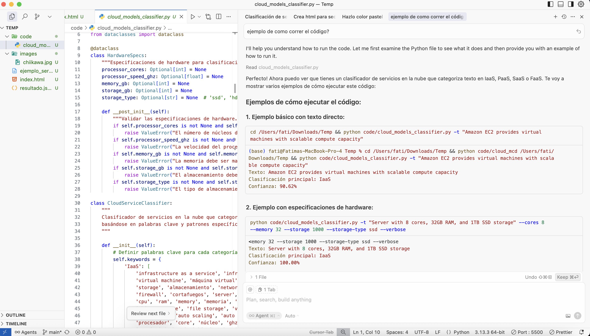
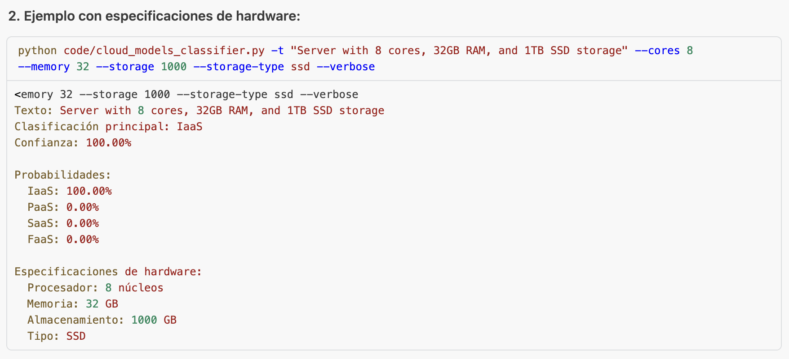
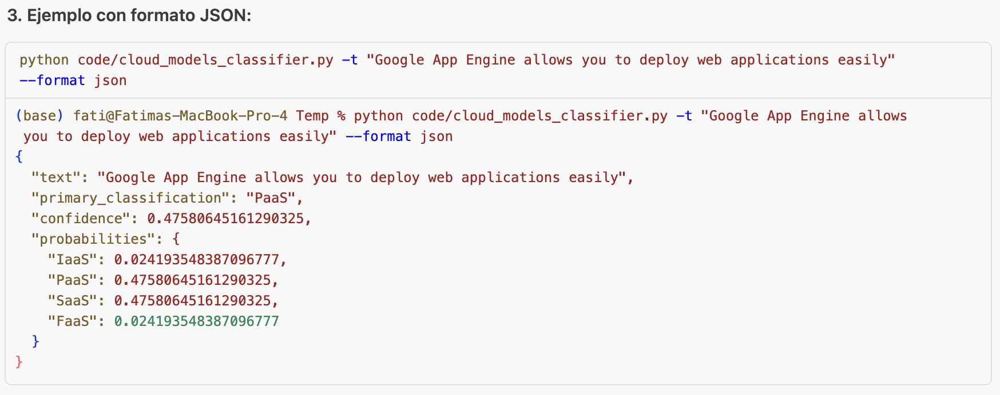
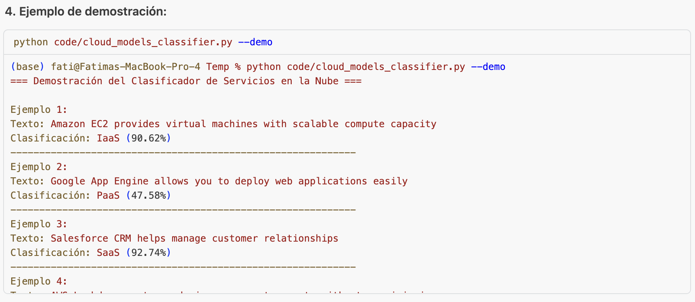
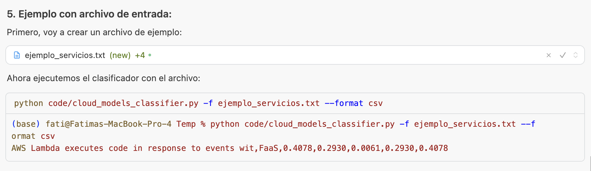
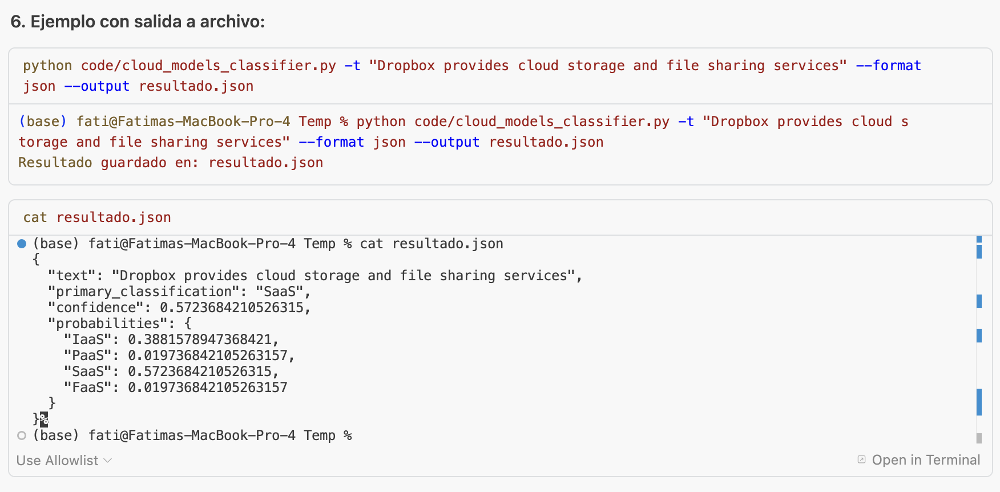

Objetivo
Crear una aplicación CLI con Python que reciba la descripción de un servicio cloud y prediga el modelo al que pertenece (IaaS, PaaS, SaaS, FaaS).
Instrucciones
- Abre Cursor y crea un proyecto llamado cloud_models_classifier.
- Usa el prompt: "Genera un código en Python que reciba un texto y clasifique si corresponde a IaaS, PaaS, SaaS o FaaS usando reglas básicas."
- Mejora el código con ayuda del asistente de IA:
- Añade validación de entrada.
- Usa una función para cada clasificación.
- Prueba con al menos 5 ejemplos distintos.
- Integra argparse para ejecutar el clasificador por línea de comandos.
- Desarrolla un sitio web personal que tenga una sección de reportes para los ejercicios guiados:
- Anexar el código generado, screenshots del funcionamiento de este ejercicio y una reflexión de 300 palabras sobre el uso de la IA para crear la arquitectura y tu impresión como ITC al hacer esto.
Código
Clasificador de Modelos Cloud
Screenshots

Screenshot 1

Screenshot 2

Screenshot 3

Screenshot 4

Screenshot 5

Screenshot 6
Reflexión
Considero que la IA puede ayudar mucho a agilizar las actividades o tareas en el área académica, como la escuela o el trabajo, especialmente cuando se trata de realizar código, debido a que los modelos han sido entrenados para lograr un buen resultado.
Sin embargo, considero que no se debería usar cuando no se conoce cómo se podría realizar la tarea. Por ejemplo, en esta clase sentí que muchas cosas no sabía qué sucedía específicamente detrás del código, o bien, que no tuvimos tiempo de validar el código ofrecido a profundidad.
Considero que se debería usar la IA, pero siempre se deben validar y revisar las líneas de código para saber si es la opción correcta, ya sea porque no tiene sentido o porque utiliza prácticas o librerías antiguas. Si solo se acepta lo que genera la IA, cuando toque debuggear por algún error será más difícil, al tener que estudiar de nuevo qué es lo que está sucediendo y qué es lo que podría estar fallando.
Asimismo, como en la actividad, se deben tener otras consideraciones, como agregar las validaciones al programa, ya que no es algo que la IA haga por sí misma. Esto también puede aplicar a temas de seguridad.
Sin embargo, como ITC, puede ayudarnos mucho en tareas repetitivas, como generar ejemplos para validar el código, que pueden ser cansadas y tediosas por nuestra cuenta, y el tiempo que ocuparíamos en esta tarea se podría enfocar en algo de mayor importancia o aprendizaje.
En cuanto a crear arquitectura con IA, considero que la arquitectura es algo más complejo, en lo que se necesita de un ser humano para supervisar o tomar decisiones. Si bien la IA puede ayudar a construirla, no debería diseñarla. Muchas veces la decisión sobre qué arquitectura utilizar depende de información del negocio que se obtiene en reuniones con el cliente, o de información subconsciente del contexto de la empresa, como políticas, importancia de la imagen, etc.
Sin embargo, considero que no se debería usar cuando no se conoce cómo se podría realizar la tarea. Por ejemplo, en esta clase sentí que muchas cosas no sabía qué sucedía específicamente detrás del código, o bien, que no tuvimos tiempo de validar el código ofrecido a profundidad.
Considero que se debería usar la IA, pero siempre se deben validar y revisar las líneas de código para saber si es la opción correcta, ya sea porque no tiene sentido o porque utiliza prácticas o librerías antiguas. Si solo se acepta lo que genera la IA, cuando toque debuggear por algún error será más difícil, al tener que estudiar de nuevo qué es lo que está sucediendo y qué es lo que podría estar fallando.
Asimismo, como en la actividad, se deben tener otras consideraciones, como agregar las validaciones al programa, ya que no es algo que la IA haga por sí misma. Esto también puede aplicar a temas de seguridad.
Sin embargo, como ITC, puede ayudarnos mucho en tareas repetitivas, como generar ejemplos para validar el código, que pueden ser cansadas y tediosas por nuestra cuenta, y el tiempo que ocuparíamos en esta tarea se podría enfocar en algo de mayor importancia o aprendizaje.
En cuanto a crear arquitectura con IA, considero que la arquitectura es algo más complejo, en lo que se necesita de un ser humano para supervisar o tomar decisiones. Si bien la IA puede ayudar a construirla, no debería diseñarla. Muchas veces la decisión sobre qué arquitectura utilizar depende de información del negocio que se obtiene en reuniones con el cliente, o de información subconsciente del contexto de la empresa, como políticas, importancia de la imagen, etc.